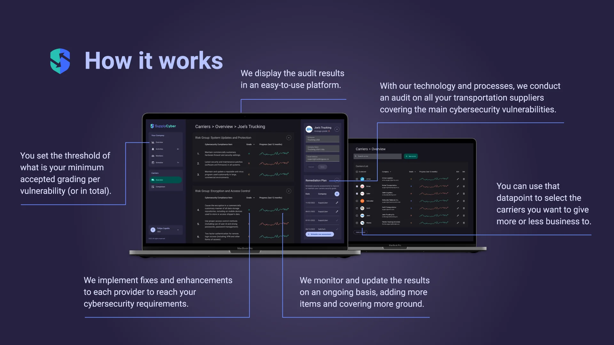

Overview
SupplyCyber is a cybersecurity compliance platform that audits and monitors the transportation providers a company relies on — carriers and brokers that are often left out of standard vendor security checks, even though a breach on their end can spread straight back to the client.
Felipe C., SupplyCyber's CEO, brought me on to give the idea a visual identity and a way to pitch it. We agreed on three deliverables: a basic logo and visual identity, a 7-slide pitch deck, and a high-fidelity Figma prototype of the web app with a few interactions across 4 screens.
The deadline was July 31, 2022; I delivered within the 2–3 week window we'd agreed on.
Pitch deck
The deck builds the case for SupplyCyber before showing the product: cyberattacks on supply chains and transportation are rising, that risk extends to the client's own operations, and there's no efficient way to audit it today — which is where SupplyCyber comes in.
Prototype
Past the pitch, the deck walks through how the product actually works — auditing every carrier, grading them, and letting the client set thresholds and track improvement over time. I designed 4 high-fidelity screens in Figma to support this: the company-wide overview, the carriers list, a carrier's detail view with its remediation plan, and a chart comparing carriers' security levels over time.

Try the interactive prototype below, or open it in a new tab.